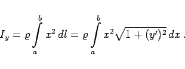
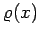
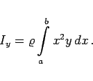

Inhalt Index DeskTop Bronstein

 Integralrechnung Bestimmte Integrale Anwendungen bestimmter Integrale Anwendungen in Mechanik und Physik
Integralrechnung Bestimmte Integrale Anwendungen bestimmter Integrale Anwendungen in Mechanik und Physik


|  | (8.68) |
Ist die Dichte eine Funktion , dann muß ihr analytischer Ausdruck in die Integration einbezogen werden.
|  | (8.69) |